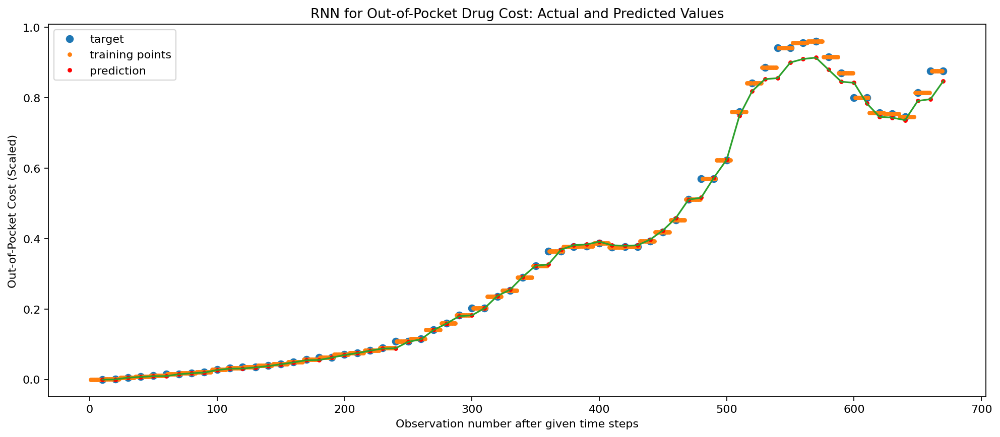
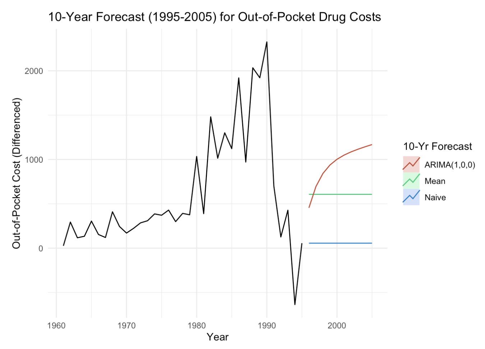
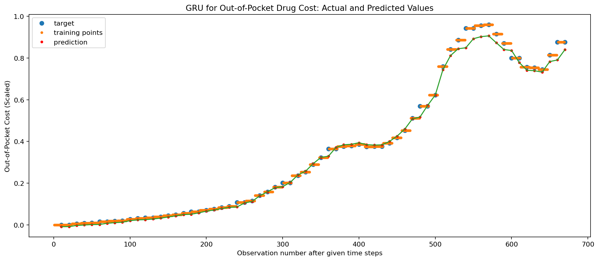

In this final section of the project, I am going to begin by applying univariate deep learning prediction methods to the out-of-pocket drug costs time series data I used to perform ARIMA modeling in the ARMA/ARIMA/SARIMA section of this portfolio.
Univariate Deep Learning Prediction: Can the Out-of-Pocket Drug Cost ARIMA Model be Improved Upon?
To determine if deep learning can improve the current best ARIMA(1,0,0) model, I am going to fit three types of network models: a Recurrent Neural Network (RNN) model, a Gated Recurrent Unit (GRU) model, and Long Short-Term Memory (LSTM) model.
To do this, I am going to the use the keras package in Python.
Code
import sysimport tensorflow.kerasimport pandas as pdimport sklearn as skimport scipy as spimport tensorflow as tfimport platformprint(f"Python Platform: {platform.platform()}")print(f"Tensor Flow Version: {tf.__version__}")print(f"Keras Version: {tensorflow.keras.__version__}")print()print(f"Python {sys.version}")print(f"Pandas {pd.__version__}")print(f"Scikit-Learn {sk.__version__}")print(f"SciPy {sp.__version__}")gpu =len(tf.config.list_physical_devices('GPU'))>0print("GPU is", "available"if gpu else"NOT AVAILABLE")
Python Platform: macOS-13.3.1-arm64-arm-64bit
Tensor Flow Version: 2.12.0
Keras Version: 2.12.0
Python 3.10.10 (main, Mar 21 2023, 13:41:05) [Clang 14.0.6 ]
Pandas 2.0.1
Scikit-Learn 1.2.2
SciPy 1.10.1
GPU is available
Code
drug = pd.read_csv('./datasets/nhe_drug.csv')
Code
import pandas as pdimport numpy as npfrom keras.models import Sequentialfrom keras.layers import Dense, SimpleRNN, LSTM ,GRUfrom sklearn.preprocessing import MinMaxScalerfrom sklearn.metrics import mean_squared_errorimport matplotlib.pyplot as plt
Recurrent Neural Network (RNN)
For the RNN model, the first thing I am going to do is reformat the data into the correct shape for Keras.
Code
drug = drug.loc[:, ['Year', 'Out of Pocket']]
Code
drug['Year'] = pd.to_datetime(drug['Year'], format="%Y")drug['Out of Pocket'] = pd.to_numeric(drug['Out of Pocket'].str.replace(',', ''))
Code
drug = drug.set_index('Year')
To ensure I have more data points to work with while training, I am converting the time series from yearly to monthly.
Code
drug_month = drug.resample('M').ffill()
Next, I am going to perform the train-test split, with 80% of the data being used for training.
Code
def get_train_test(data, split_percent=0.8): scaler = MinMaxScaler(feature_range=(0, 1)) data = scaler.fit_transform(data).flatten() n =len(data)# Point for splitting data into train and test split =int(n*split_percent) train_data = data[range(split)] test_data = data[split:]return train_data, test_data, datatrain_data, test_data, data = get_train_test(drug_month)print(train_data.shape)print(test_data.shape)
(672,)
(169,)
Below, I am visualizing the training-testing split:
Code
import plotly.io as piopio.renderers.default ="plotly_mimetype+notebook_connected"import plotly.express as pxdef plotly_line_plot(t,y,title="Plot",x_label="Time in Months",y_label="Y(t): Ratio of Out-of-Pocket Cost"): fig = px.line(x=t[0],y=y[0], title=title, render_mode='SVG') # ADD MOREfor i inrange(1,len(y)):iflen(t[i])==1:#print(t[i],y[i]) fig.add_scatter(x=t[i],y=y[i])else: fig.add_scatter(x=t[i],y=y[i], mode='lines') fig.update_layout( xaxis_title=x_label, yaxis_title=y_label, template="plotly_white", showlegend=False ) fig.show()t1=[*range(0,len(train_data))]t2=len(train_data)+np.array([*range(0,len(test_data))])plotly_line_plot([t1,t2],[train_data,test_data],title="Out-of-Pocket Drug Costs Since 1960")
Now that the train-test split has been completed, I will reshape the time series for the Keras model.
Code
# PREPARE THE INPUT X AND TARGET Ydef get_XY(dat, time_steps,plot_data_partition=False):global X_ind,X,Y_ind,Y #use for plotting later# INDICES OF TARGET ARRAY# Y_ind [ 12 24 36 48 ..]; print(np.arange(1,12,1)); exit() Y_ind = np.arange(time_steps, len(dat), time_steps);#print(Y_ind); exit() Y = dat[Y_ind]# PREPARE X rows_x =len(Y) X_ind=[*range(time_steps*rows_x)]del X_ind[::time_steps] #if time_steps=10 remove every 10th entry X = dat[X_ind];#PLOTif(plot_data_partition): plt.figure(figsize=(15, 6), dpi=80) plt.plot(Y_ind, Y,'o',X_ind, X,'-'); plt.show();#RESHAPE INTO KERAS FORMAT X1 = np.reshape(X, (rows_x, time_steps-1, 1))# print([*X_ind]); print(X1); print(X1.shape,Y.shape); exit()return X1, Y#PARTITION DATAp=10# simpilar to AR(p) given time_steps data points, predict time_steps+1 point (make prediction one month in future)testX, testY = get_XY(test_data, p)trainX, trainY = get_XY(train_data, p)
Below, we can see the shape of the split. Everything looks normal.
First, I am going to establish the parameters. I will be using 3 recurrent hidden units, 200 epochs, and fraction batch size of 0.2, and a validation split of 0.2. The results of this are seen below.
Code
recurrent_hidden_units=3epochs=200f_batch=0.2#fraction used for batch sizeoptimizer="RMSprop"validation_split=0.2print(trainX.shape,p,trainY.shape)print(p,trainX.shape,testX.shape,trainY.shape,testY.shape)
Now, I will create and run the RNN model. I will also add regularization to the model.
Code
from tensorflow.keras import regularizersdrug_rnn = Sequential()drug_rnn.add(SimpleRNN( recurrent_hidden_units, return_sequences=False, input_shape=(trainX.shape[1],trainX.shape[2]), # recurrent_dropout=0.8, recurrent_regularizer=regularizers.L2(1e-2), activation='tanh') ) #NEED TO TAKE THE OUTPUT RNN AND CONVERT TO SCALAR drug_rnn.add(Dense(units=1, activation='linear'))# COMPILE THE MODEL drug_rnn.compile(loss='MeanSquaredError', optimizer=optimizer)drug_rnn.summary()
Above, we can see how the training and validation loss decrease over time. Although it looks messy, we can see that the validation loss is extremely small, and is decreasing over time. By 200 epochs, it is nearing 0.001.
This can also been seen by looking at a parity plot of the predicted out-of-pocket drug cost agains the real out-of-pocket drug cost. Overall, it looks like the model is successfully predicting true out-of-pocket cost values!
Finally, these predictions can also be visualized on the actual time series data.
As can be seen below, the predicted values match the target and training values nicely, suggesting the success of the model. Even though the cost becomes a lot more volatile around step 500, we can see the predictions do a great job of picking up on the pattern.
Code
def plot_result(trainY, testY, train_predict, test_predict): plt.figure(figsize=(15, 6), dpi=80)#ORIGINAL DATAprint(X.shape,Y.shape) plt.plot(Y_ind, Y,'o', label='target') plt.plot(X_ind, X,'.', label='training points'); plt.plot(Y_ind, train_predict,'r.', label='prediction'); plt.plot(Y_ind, train_predict,'-'); plt.legend() plt.xlabel('Observation number after given time steps') plt.ylabel('Out-of-Pocket Cost (Scaled)') plt.title('RNN for Out-of-Pocket Drug Cost: Actual and Predicted Values') plt.show()plot_result(trainY, testY, train_predict, test_predict)
(603,) (67,)

As seen earlier, the training and testing MSE and RMSE are below. This is very low, and will act as a point of comparison when moving to the GRU and LSTM models.
However, even before training those models, I can already say that the RNN model improves a lot on what was seen in the original ARIMA(1,0,0) model. Even though I used AIC and BIC to measure the success of that model, the predictions from the much less complex ARIMA model seen below are unable to compare to that to of the RNN.
However, it is very important to note that overfitting might be occurring. After all the models have been run, I will be performing forecasting to see how the “best” deep learning model attempts to forecast the next 10 years. If it performs poorly, I will have to conclude that the model is performing so well likely becasue it is overfitting, and therefore may not be reliable.

arima
Gated Recurrent Unit (GRU)
Next, I will move to the GRU to see how it performs comparatively to the successful RNN. The process is very similar to what was done before, and I will be using the same number of recurrent hidden units and epochs, the same fraction batch size, and the same validation split of 0.2. Once again, I am applying regularization to the model.
Code
drug_gru = Sequential()drug_gru.add(GRU( recurrent_hidden_units, return_sequences=False, input_shape=(trainX.shape[1],trainX.shape[2]), # recurrent_dropout=0.8, recurrent_regularizer=regularizers.L2(1e-2), activation='tanh') ) #NEED TO TAKE THE OUTPUT RNN AND CONVERT TO SCALAR drug_gru.add(Dense(units=1, activation='linear'))# COMPILE THE MODEL drug_gru.compile(loss='MeanSquaredError', optimizer=optimizer)drug_gru.summary()
Once again, I will take a look at the visual learning history to ensure everything looks normal and that the model is learning as expected. Interestingly enough, the GRU model appears to be learning more quickly than the RNN, as the validation loss plummets before epoch 50.
def plot_result(trainY, testY, train_predict, test_predict): plt.figure(figsize=(15, 6), dpi=80)#ORIGINAL DATAprint(X.shape,Y.shape) plt.plot(Y_ind, Y,'o', label='target') plt.plot(X_ind, X,'.', label='training points'); plt.plot(Y_ind, train_predict,'r.', label='prediction'); plt.plot(Y_ind, train_predict,'-'); plt.legend() plt.xlabel('Observation number after given time steps') plt.ylabel('Out-of-Pocket Cost (Scaled)') plt.title('GRU for Out-of-Pocket Drug Cost: Actual and Predicted Values') plt.show()plot_result(trainY, testY, train_predict, test_predict)
(603,) (67,)

The results of the training and testing MSE for the GRU model is interesting, and very close to the RNN model. Because the test MSE and RMSE are higher for the RNN model, at 0.00103 and 0.03206, respectively, I believe the GRU is an improvement.
Finally, I am going to look at the last model, LSTM, to determine if it is able to outperform the current leader of RNN in terms of predictive ability and minimal testing error.
As before, the process is nearly the same to set up the LSTM model, and regularization is added.
Code
drug_lstm = Sequential()drug_lstm.add(LSTM( recurrent_hidden_units, return_sequences=False, input_shape=(trainX.shape[1],trainX.shape[2]), # recurrent_dropout=0.8, recurrent_regularizer=regularizers.L2(1e-2), activation='tanh') ) #NEED TO TAKE THE OUTPUT RNN AND CONVERT TO SCALAR drug_lstm.add(Dense(units=1, activation='linear'))# COMPILE THE MODEL drug_lstm.compile(loss='MeanSquaredError', optimizer=optimizer)drug_lstm.summary()
Below, we can see the visual learning history of the LSTM model. Similar to the GRU model, the MSE loss decreases significantly after 50 training epochs.
Once again, the parity plot and the predicted vs actual values plot match that of the RNN and GRU models, suggesting that LSTM is also quite successful and predicting the out-of-pocket drug cost. This means that the differences in the success of the LSTM when compared to the other models is likely very small.
def plot_result(trainY, testY, train_predict, test_predict): plt.figure(figsize=(15, 6), dpi=80)#ORIGINAL DATAprint(X.shape,Y.shape) plt.plot(Y_ind, Y,'o', label='target') plt.plot(X_ind, X,'.', label='training points'); plt.plot(Y_ind, train_predict,'r.', label='prediction'); plt.plot(Y_ind, train_predict,'-'); plt.legend() plt.xlabel('Observation number after given time steps') plt.ylabel('Out-of-Pocket Cost (Scaled)') plt.title('GRU for Out-of-Pocket Drug Cost: Actual and Predicted Values') plt.show()plot_result(trainY, testY, train_predict, test_predict)
(603,) (67,)
The results of the training and testing MSE and RMSE for the LSTM model are interesting, as they match that of the GRU model despite having unique training processes.
Neural Network Model Comparison and Forecasting: Are the Deep Learning Models Reliable?
Because the GRU and LSTM perform equaly well, it’s a bit difficult to determine which is best. However, I believe that the GRU is the model, as it is far less complex than the LSTM. This is important for two reasons. The first reason is that my dataset is relatively small, even after changing the time series from yearly to monthly, therefore the computing power and possible overfitting of the LSTM may not be necessary, especially if they have the same error rates. The second reason is that all modeling and simulation for this project is done on an M2 Mac chip, which is considered by many to perhaps be a bit too efficient when it comes to faster training times and increased computational power. Because these tensorflow and keras models were not developed for the M2 chip’s power, it is possible that an M2 chip may overfit when compared to other chips, which also leads me to believe that the GRU is a better choice due to its lower complexity.
Just as I did before with the ARIMA models in an earlier tab of this portfolio, I am going to attempt to use the GRU to forecast out-of-pocket drug costs ten years into the future. Again, I will be using the monthly data used to train the model, making it a bit different from the ARIMA modeling.
Code
num_steps =10*12#because I converted the data to monthly dataforecast = np.zeros((num_steps,))init = trainX[-1,:,:]for i inrange(num_steps):#predicting output based on input output = drug_gru.predict(init.reshape(1, init.shape[0], init.shape[1]))#store forecasted value forecast[i] = output[0,0]#update initial value before repeating loop init = np.vstack([init[1:,:], output])
Below are the forecasted values for the next 10 years according to the GRU model. As mentioned earlier, extremely poor forecasting by the deep learning models may suggest overfitting is present, and that the models are likely unreliable for forecasting this dataset.
Below, I performed the same 10-year forecasting done for the ARIMA model, where I predicted ten years into the future beginning in 1995 and ending in 2005.
Comparing this to the differenced ARIMA(1,0,0) 10-year forecast referenced earlier, it appears that the ARIMA model is much more reliable than the GRU model, likely due to severe overfitting occurring in the training process. Because of the size of the dataset, it is likely that the neural network model does not have enough training points to work off of. Because ARIMA is so much simpler in comparison, it performs significantly better even if it not perfect by any means.
arima
References
For this section, I utilized much of the code from Professor James Hickman’s “sunspots.ipynb” lab, which can be found HERE.